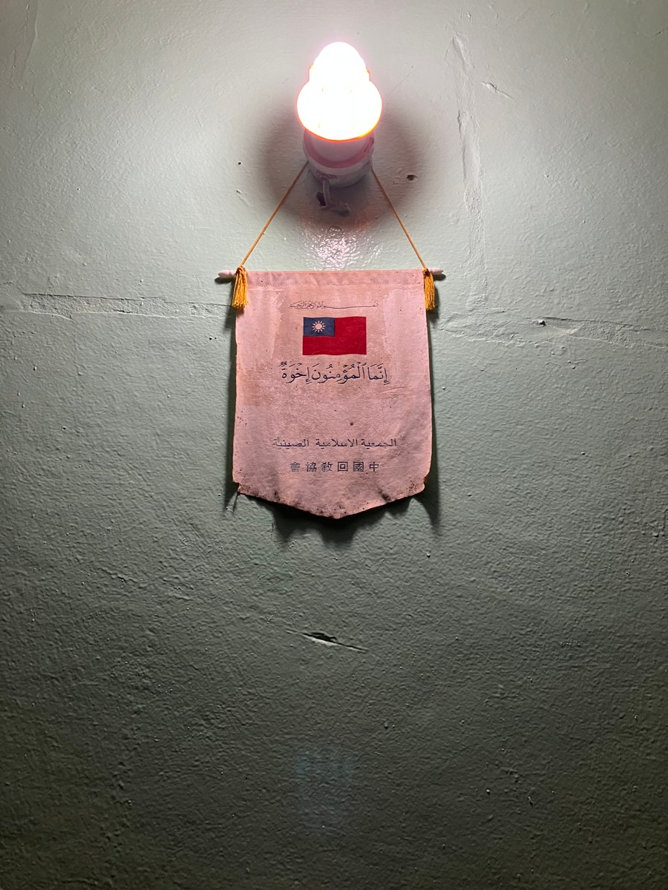

Thoughts

Photo taken from the salon of Sheikh al-Hajj al-Mushri in Māṭammūlana, Mauritania, June 2023.
My political propensity and values
Growing up in mainland China, I didn't care, or, more precisely, couldn't care much about politics. Like most ordinary Chinese people, I used to firmly believe that "sovereignty prevails over human rights" and that China's regime is different from other countries but "has its unique strengths".
However, my previous political views were consecutively challenged as I got more and more exposed to external information and heard more and more stories that told the opposite of what the government has been propagandizing for long. My studying experience as an exchange student in Egypt was such a turning point for my political values. Without the surveillance of the Great Fire Wall, all kinds of fresh, and totally different news and viewpoints thoroughly stormed my brain. When one of my classmates surreptitiously told me that she had to uninstall all foreign apps and her tweets on "sensitive" topics in WeChat before she went back to her hometown in Xinjiang (and she is not even of Uighur origin), I couldn't firmly believe the narrative that "nothing ever happened in Xinjiang" anymore. But the substantive change didn't occur until I read about what happened at Tiananmen Square in June 1989. When hundreds, even thousands of passionate, patriotic, and bare-handed students were brutally slaughtered by their own government with machine guns and tanks, the last bit of legitimacy of the CCP had vanished in my heart. And when I saw the so-called "separatists" and "national traitors" in Taiwan are actually totally elected and supported by their own people, and that the Republic of China --- the first democratic republic in Asia founded by Sun Yat-sen in 1912, did not perish "out of incompetence and corruption" but conversely, enjoys thriving prosperity out of its cherishing for universal human rights and democratic way of life in the island of Taiwan, I couldn't stop thinking about what the government is trying to withhold and what democracy will bring to all Chinese people. More sadly, when I realized that more and more younger generations, even many well-educated college students around myself are becoming increasingly extreme and irrational in issues like Hongkong and Taiwan, and the "American hegemony", it's reasonable to ask, is there anything wrong with this society? Where are we heading to?
There is no need to mention the situation in recent years. Sun Yat-sen's revolution brought a refreshing air of democratic ideologies and scientific notions to this old nation 110 years ago, yet after a century it seems that we are still hesitating around the edge of modern democracy. The sad and gloomy truth is that the Orwellian rule of the whole Chinese society is so airtight and insulating that most ordinary Chinese people don't have a second choice but to trust the authority and be "patriotic", because the authoritarian regime and its propaganda had permeated into every corner of the public spheres and there is little room left for independent thinking and civil society.
Having said all that, I strongly oppose the violation of human rights, and the suppression of civil freedoms like free speech, free media, and independent organizations. I have an intense aversion toward hypocritic propaganda and fanatic nationalism. Beyond all that, I love my country and I sincerely hope one day all Chinese people will live in a free, fair, and democratic society. I hope one day we'll be able to attend classes in a classroom where there is no camera focusing on the teacher and students are free to learn whatever they want. I hope one day millions of underprivileged children in rural areas will truly get equal opportunities with the rich and the powerful. And I hope that all people will have a say in their own destiny and can lead their own lives without bowing to anyone or anything except the law, and that my country will be respected again around the world for its goodness and contribution to humanity rather than its terrifying power…… I do hope so.
The different dispositions between Arabs and Chinese
I could never imagine the features of the Arab people before learning the Arabic language, and when I think of the word “Arabs” nothing appears in my mind except an image of men wearing tarboosh and robes, or an image of veiled women. However, these stereotypical images and impressions quickly disappeared after my knowledge of the Arabic language, and the cultures and history of Arabs, especially after my exchange experience in Egypt in the third year of university.
Generally speaking, the Arab people, especially Egyptian people, are a group of simple souls and beings. For the most part, their hearts are deeply filled with frankness and forthrightness, regardless of their gender, age, profession, or social status. These traits will appear more clearly when in comparison with the Chinese people, who are cultivated in an archaic and enduring societal environment that praises obedience and individual restraint for the benefit of the group. For example, on the bus when a sudden brake occurs and inevitably makes all passengers plunge forward or even get hit into something, Arabs will often complain or mumble about their anger and resentment to the driver right away, while Chinese passengers are angry, of course, but most likely they will keep their anger secretly and nothing appears in their faces, not a word would come out of their mouths as if what happened did not upset them at all. Personally, I think, based on these merits and traits of the Arabs, most of the time dealing with them is relatively simple and easy, because one is encouraged to express his feelings and thoughts frankly without hesitation and conservativeness, which bolsters the effectiveness of communication and reduces the possibility of misunderstanding.
Another distinguishing feature of the Arab people is their generosity. Many Arab friends of mine and Arab students I know are generally generous and hospitable. This is not a compliment at all, but my true and sincere feelings from life experiences. I accepted assistance and help from my Arab friends whenever I faced a problem in my study or life during my stay in Tanta, Egypt. What's more, many Arabs are glad to extend their hand to you even if they don't know you at all. This trait is without any doubt one of the most laudable features and the most beautiful merits among the Arabs, which they inherited from ancient times. Generosity has been considered a major and fundamental merit in a man from the ancient ages when Arabs were living a nomadic life in the Arabian Peninsula. In Arab Islamic culture, generosity (Kurama) is the essence of gentleness and nobility. The fact that the Arabic word for "generous" --- "Kareem" also means "noble" is compelling evidence of how much Arabs cherish this trait.
It is also worth noting that the first feature that was mentioned above, frankness and forthrightness, is not always a delightful trait if we are telling the truth. Because simplicity and frankness sometimes can be the cause of misunderstanding in dealings between different peoples. For example, when it comes to the personal issues of age, marriage, and salary, Chinese people definitely have different understandings from Arab people. I couldn't tell how many times I've been asked by my Arab friends and even some random strangers about why I don't have a girlfriend, when I plan to get married, etc. Many Arabs are just like older generations of Chinese people who like to put their noses into others' business. Considering this circumstance, I'd say the frankness of speaking may hurt the feelings of others or be taken as an offensive behavior so that sometimes it's not always wise to speak what you think out loud.
These impressions are drawn from my personal experiences, so it is natural that they are incorrect or do not correspond to the whole truth of the matter. Likewise, people in every country and in every civilization have different characteristics and dispositions. It does not make sense to label a few words on a group of people in general, especially since the Arabs and Chinese are two of the most culturally diverse peoples on earth. Whatever the character and temperament of a person, there is a trustworthy saying that reveals the golden rule of dealing with people: "Do not treat others as you do not want them to treat you".
Major Arabic media platforms and their features
Through my undergraduate and master's studies, I've been learning Arabic for nearly six years by now, which enables me to get familiar with plenty of Arab newspapers, magazines, and online media. I listed them below, hoping to provide help for those who are interested in learning the Arabic language and cultures.
Al-Jazeera, Qatar, https://www.aljazeera.net. It's famous for providing critical first-hand coverage of current Middle Eastern news, but many Arab governments don't like it for its sharp or even sarcastic remarks on their internal affairs. Personally, I think it's quite impartial in news reporting, given that its acrid criticisms are pointed to China, Arabs, the West, Russia, and almost all countries except Qatar itself.
Al-Arabia, KSA, https://www.alarabiya.net. The state-owned satellite TV channel has the largest sphere of influence in the Gulf area. It often disseminates Saudi Arabia's aversion towards Iran and Shiah organizations like the Hezbollah of Lebanon.
Al -Ahram, Egypt, https://www.ahram.org.eg. It's said to be the trailblazer of modern mass media in the Arab world, and Egyptian people are really proud of that. However, frankly speaking, the module design and news editing work are relatively old-fashioned compared to the fancy Gulf ones.
Sky News Arabia, UAE, https://www.skynewsarabia.com. Sky News Arabia was co-founded by English Sky News corporation and the UAE government, but its coverage and influence span the whole Middle East. The reporting tendency is quite close to Al-Arabia.
MBC, KSA, https://www.mbc.net. Entertainment channel focusing on Middle Eastern TV series and movies, based in Saudi Arabia.
Al-Youum 7, Egypt, https://www.youm7.com. The biggest private media in Egypt and one of the biggest in the Middle East. Topics are diverse and opinions are kind of less official. It's noteworthy that contrary to many Gulf media platforms, all hosts of Egyptian media platforms only speak Egyptian colloquial Arabic.
Al-Hadath, KSA, https://www.alhadath.net/#. Another major media in Saudi Arabia, it's famous for in-depth current affairs coverage. The reporting tendency is also official so it may be somewhat biased.
Al-Ittihad, UAE, https://www.alittihad.ae.
Al-Masry Alyoum, Egypt, https://www.almasryalyoum.com.
Jarida Al-akhbar, Lebanon, https://www.al-akhbar.com.
Haaretz, Israel, https://www.haaretz.com.
Hespress, Morocco, https://www.hespress.com.
Al-Jarida, Tunisia, https://www.aljarida.com.tn.
Al-Watan, Oman, alwatan.com.
Algeria Now, Algeria, https://algeriemaintenant.dz.
Saharamedias, Mauritania, https://www.saharamedias.net.
RimNow, Mauritania, https://www.rimnow.com. Portal website of major Mauritanian media outlets and online services.
......
Basic conceptions of war in Islam
First, the reasons for wars in Islam. Contrary to what the mainstream media has been portraying, basically, the reasons for fighting in Islam are neither to impose Islam or Islamic practices on other peoples brutally, nor to plunder or kill in the name of "Jihad", but rather to resist aggression and to protect Muslims under persecution. In the second Surra of the Qur'an, there is a sentence, "Oppression is even worse than killing", which underscores the protection of people living in newly-conquered lands and denounces the violation of one's belief. In ancient times, forcing conversions under Muslim rules was quite common, especially in religiously diverse regions, e.g., Persia and central Asia during 7 to 10 centuries. But we should remember that this phenomenon was somewhat ubiquitous at that time, and Muslims, Christians, and even Buddhists carried out a lot of atrocities alike for religious reasons then. What's more, for the most part, conversion to Islam happened in a gradual, quiet and peaceful way. And the incentives that drove many pagans to convert were rather economical and socio-cultural than religious.
Second, the basis of Muslims' relations with others. Just as fighting in Islam is to counterattack, and not to compel others to a certain belief, the basis of Muslims' relations with non-Muslims is peace until an attack against Muslims is launched. This basis can be evidenced by the Qur'anic texts and by the historical facts that can be traced back to the time of the Prophet Mohamed. In the 22 Surra goes "Those who have been attacked are permitted to defend themselves because they have been wronged and unjustly attacked", which states that peace is the basis of Muslim relations until an attack is launched against them. What's more, according to the Hadith, Prophet Mohamed used to live in peace with the disbelievers of Quraysh calling them to God. He strove against their hostile deeds with endurance and patience and didn't make the order to fight till the last second when Muslims' lives were endangered. That being all said, we still need to acknowledge that the principle of peace has not always been implemented well in history, and the Muslims' interactions with non-Muslims are, just like all other religious groups, companied by sword and blood from time to time.
Third, the handling of captives and prisoners of war. The Prophet Mohamed forbade killing civilian laborers who neither fought nor had anything to do with combat. This is because according to Islamic doctrines, a fight will only be justifiable when it's directed against only those who actually fight, and combat is not meant to target the people, but rather to ward off the powers of evil and corruption. Besides, the Prophet also forbade the killing of children, women, and aged persons, since they are vulnerable enough to not engage in combat during the battle and conduct any harm to the Muslim army. Generally speaking, we can say it's a valued virtue in Islam to treat captives and war prisoners with some dignity and respect, especially when they show the willingness to convert or obey. The stubborn rebelling young males, however, may possibly face another situation.
Fourth, the handling of civilians in newly-conquered areas. Like Christianity in the Middle Ages, religion plays a significant role in deciding the way civilians of conquered lands are treated. Muslims roughly divide those pagan civilians into three kinds according to the different treatments they receive. The first kind is the monotheist, "ahli al-Kitab", those who are either Christians or Jewish, receive somewhat better treatment than atheists or pantheists because Islam instructs Muslims that all monotheists are connected with the only true God/Allah and should get rewards in the afterworld, while atheists and other pagans are doomed to go to the hell. Then the second kind is those who aren't monotheists but are obedient to Muslim rule, they will be paying both capitation (alharaj) and land tax (aljizya), and there are plenty of restrictions in everyday life, too. The last kind is the people who don't bow their heads down to Muslims and rebel against Islam even after the conquering of their homeland, Muslims' reaction to them would only be slavery, blood, and death.